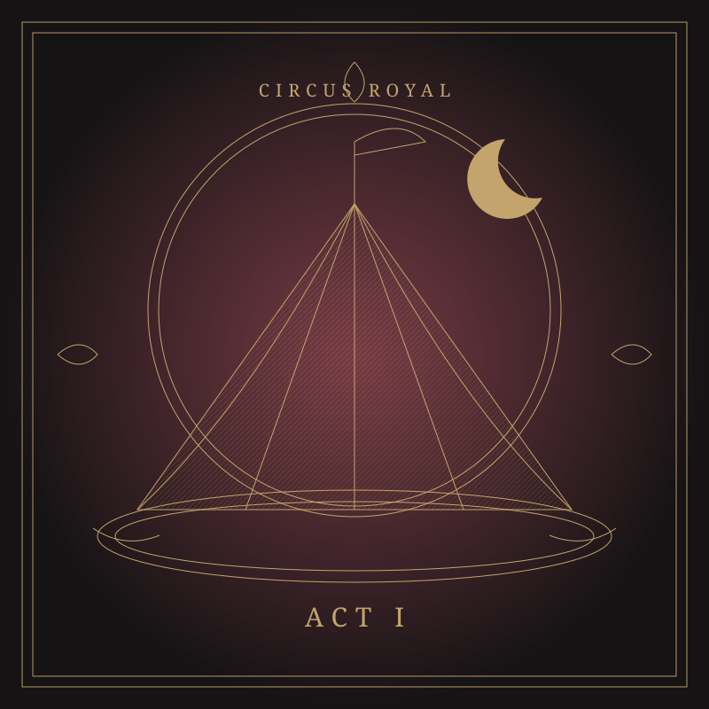

A most extraordinary entertainment
Pablo Fanque’sCircus Royal
The curtain rises on a circus.
It falls on the people who brought it to life.
THREE ACTS · EIGHTEEN SONGS · ONE EXTRAORDINARY EVENING

The evening’s programme
The Acts
An original three-act album by Kaleidoscope Minds, inspired by Victorian circus posters. Follow an imagined evening from the opening spectacle to the lives behind the applause.
Eighteen songs · Three acts
The Music
An alternative 1967
The Concept
Pablo Fanque's Circus Royal is a standalone concept album inspired by the extraordinary characters, eccentricities, and spectacle of a Victorian circus.
Drawing upon real historical performers and their remarkable stories, the project brings together original music, storytelling, and visual art to reimagine the world of Pablo Fanque's Circus Royal.
The Story Behind the Circus
In 1967, John Lennon acquired an antique Victorian poster advertising Pablo Fanque's Circus Royal. Its descriptions of performers and unusual attractions inspired The Beatles' Being for the Benefit of Mr. Kite! from Sgt. Pepper's Lonely Hearts Club Band.
But what if that same poster had inspired an entire album?
Imagine an alternative 1967 in which that single poster sparked a deeper exploration of Pablo Fanque's Circus Royal, uncovering other historical playbills filled with curious personalities, extraordinary performers, and peculiar attractions, each with a story waiting to be told.
Rather than recreating Sgt. Pepper, the project explores a different creative path from the same source of inspiration, drawing upon the rich history preserved in these Victorian circus posters to bring their characters and stories into a new musical world.
The Music
The songs that follow are new, original compositions, performed to bring this imagined album to life.
The Beatles' influence can be heard throughout the album—though it's hard to imagine writing music today without being influenced by them in some way. Their creativity and willingness to experiment helped inspire the project, but the songs and performances were never intended to recreate their sound. Instead, the music was allowed to develop naturally and find its own identity.
So step inside Pablo Fanque's Circus Royal, meet its remarkable cast of characters, and discover the stories behind the spectacle.
The inspiration belongs to 1967, the characters to the 1800s, and the music to the present.